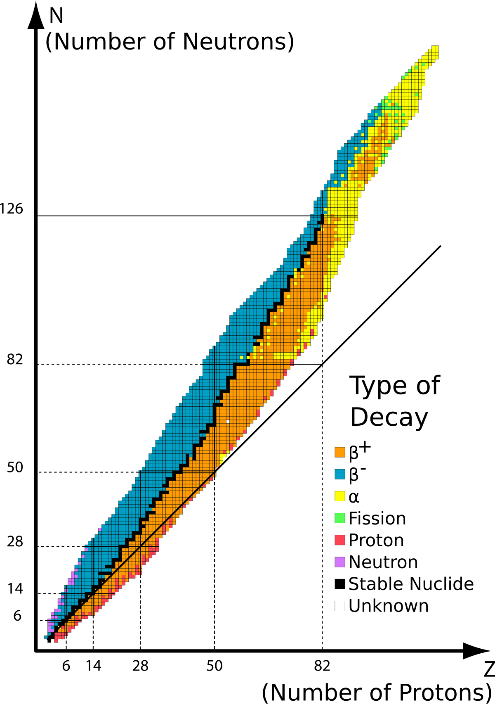
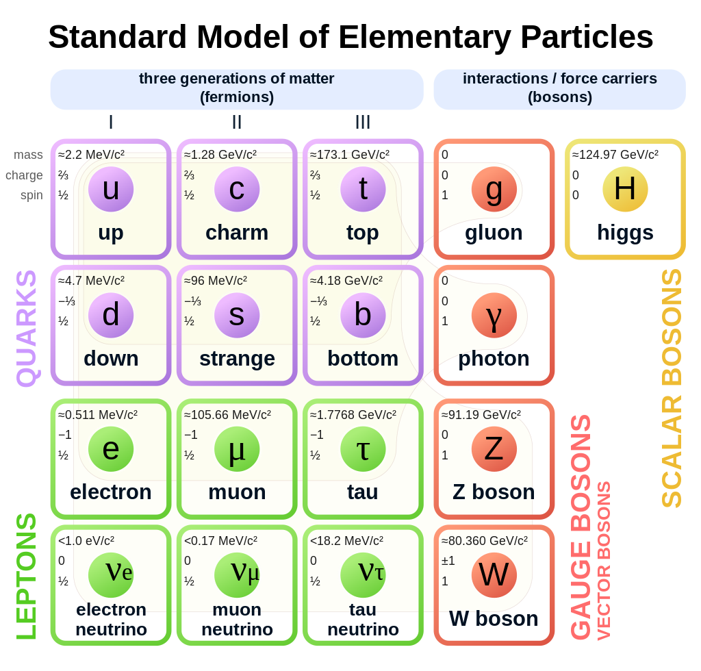

Nuclear mechanics is the study of an atom's nucleus. The nucleus of an atom consists of protons and neutrons. In the periodic table, you can find two values next to an atom. These are the atomic number and atomic mass. The atomic number represents how many electrons can be found in the atom, orbiting around the nucleus in shells. The atomic mass is a little bit more complex.
Every atom has multiple isotopes, with multiple different atomic masses. The atomic mass of an atom represents the amount of nuclei (protons and neutrons) in the nucleus of your atom. Using both this number and the atomic number, you can calculate the amount of electrons, protons and neutrons in any isotope (remember that the amount of electrons and protons is the same, unless it's an ionized atom). Since there exist multiple isotopes of one atom (i.e Carbon-11, Carbon-12, Carbon-13, ...), the atomic mass you find in your periodic table is the average value, taking into account how abundant each isotope is. For example, C-12 makes up 98.9% of every carbon atom, meaning the atomic mass will be closest to 12.
Not every isotope is stable. However, isotopes want to become stable, and to do so they will undergo radioactive decay.
 Table_isotopes.svg: Napy1kenobi, CC BY-SA 3.0, via Wikimedia CommonsThis graph shows the atomic number (amount of protons/electrons) on the X-axis and it shows the number of neutrons (atomic mass - atomic number) on the Y-axis. An isotope in black is stable. All other isotopes will undergo decay. The type of decay can be derived from the colors on the graph. Next, let's cover every type of radioactive decay.
 Cush, Public domain, via Wikimedia CommonsFor clarity's sake, here is the diagram showing every subatomic particle in The Standard Model again.
First is beta minus decay. During beta minus decay, a nucleus is converted into a nucleus with atomic number raised by 1. As a result, two other subatomic particles are formed: an electron and an electron antineutrino. A proton is a hadron, part of the fermions or baryons, consisting of quarks and gluons. An electron is a lepton, and an electron antineutrino is the antiparticle of an electron neutrino, which is also a lepton. Leptons are also fermions. By the way, writing a dash above a subatomic particle's symbol indicates it is the antiparticle.$$_{Z}^{A}X\to _{Z+1}^{A}X'+e^{-}+\overline{\nu}_{e}$$All of this checks out, because the electric charge of the nucleus increased by 1 and the electron has an electric charge of -1. Also, the electron antineutrino - like the electron neutrino - has an electric charge of 0, so it doesn't matter in this analogy.
Beta plus decay is the complete opposite of beta minus decay, as its name suggests. The nucleus converts into a nucleus with atomic number decreased by 1. As a result, two other subatomic particles are formed, the opposites of last time: a positron and an electron neutrino.$$_{Z}^{A}X\to _{Z-1}^{A}X'+e^{+}+\nu_{e}$$This also makes sense, because the nucleus' electric charge decreased by 1 and the positron has an electric charge of +1. Also, the electric neutrino still has an electric charge of 0. Basically, the total electric charge has to stay the same on both sides of the conversion.
Alpha decay is radioactive decay where the nucleus emits an alpha particle, which is basically just the nucleus of a helium-4 atom. The nucleus of a helium-4 atom consists of 2 protons and 2 neutrons. So, the nucleus undergoing alpha decay will lose 2 protons and 2 neutrons.$$_{Z}^{A}X\to _{Z-2}^{A-4}X'+_{2}^{4}\alpha$$
Gamma decay is not seen on the diagram showing isotopes, because it has no impact on the composition of the nucleus. After the nucleus has undergone some alpha and beta decays, it will most likely be in an excited, high-energy state. That's when it can undergo gamma decay, where it gives off a gamma ray (consisting of photons, a type of boson). This causes it to lose energy and enter a low-energy state. The high-energy state is often noted with a star (*) next to the symbol.$$_{Z}^{A}X^{*}\to _{Z}^{A}X+_{0}^{0}\gamma$$
Fission is when the nucleus splits into two smaller nuclei. Alpha decay, while it does emit a helium-4 nucleus, is not fission. Nuclear fission is activated by bombarding a nucleus with a neutron. It can also happen spontaneously in heavy isotopes, like uranium-235. The result of a fission decay depends on tons of factors and is not defined. We will not go any deeper into this.
Proton and neutron decay are too complicated and even hypothetical to get into. If you take a look at the diagram, you can tell it only takes place for the farthest isotopes an atom can have.
Every nuclear power plant or nuclear reactor in the entire world, as of 2023, uses nuclear fission. The downside of this is that it leaves behind radioactive waste. Scientists have been researching nuclear fusion reactors for decades. Nuclear fusion is used in the core of any star to keep that star from imploding. Creating a nuclear fusion reactor would be like creating an artificial star here on Earth.
I'm not referring to the video game here. Half-life is the time it takes a radioactive nucleus to become half as radioactive. Scientists use this measurement to calculate at what point nuclear waste is safe. You can find the half-life of any isotope in a textbook or online. This equation is used to calculate the amount (N) of radioactivity that is left, with N0 being the starting value:$$N=N_{0}*0.5^{\frac{t}{t_{1/2}}}$$Most governments agree that a radioactive material is safe to dispose of after 10 halvings. For something like Cesium-137, a radioactive waste material, the half life is 30 years. This means that it is safe after 300 years. Now you see why storing nuclear waste is such a problem.